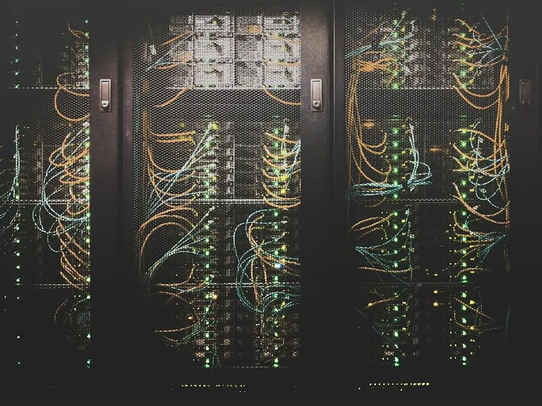
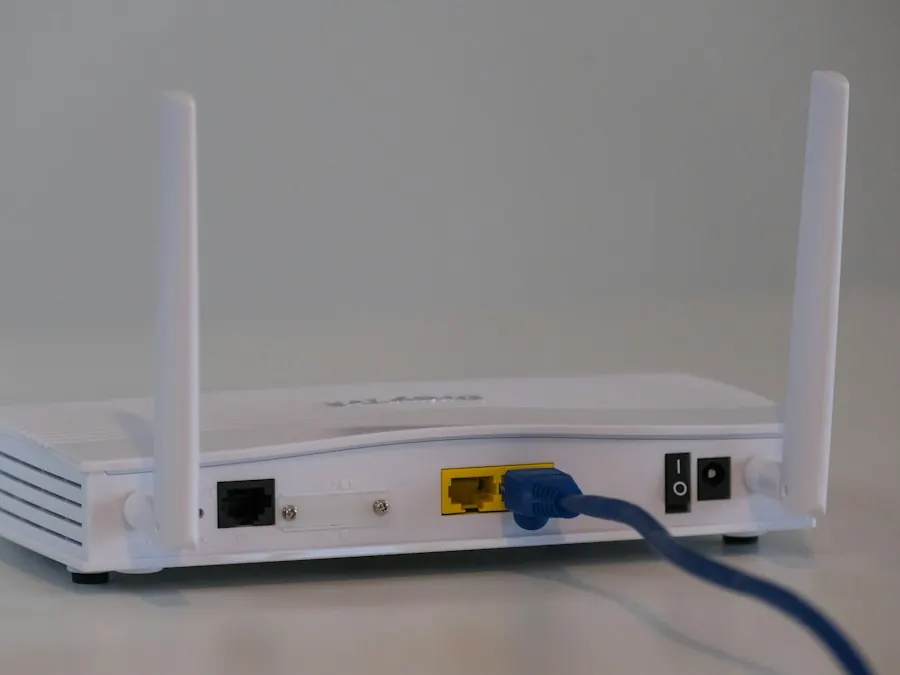
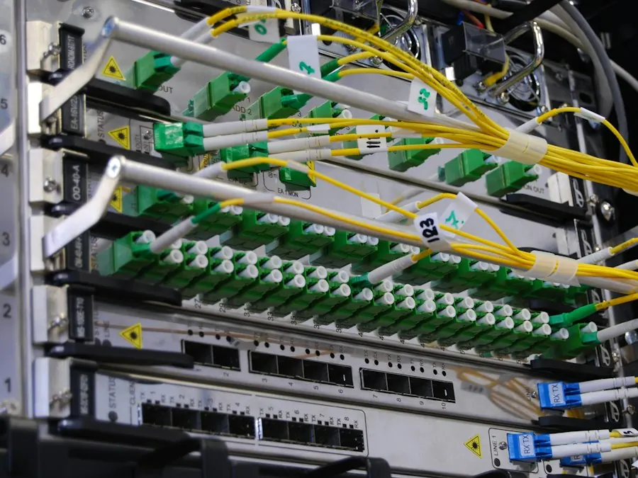
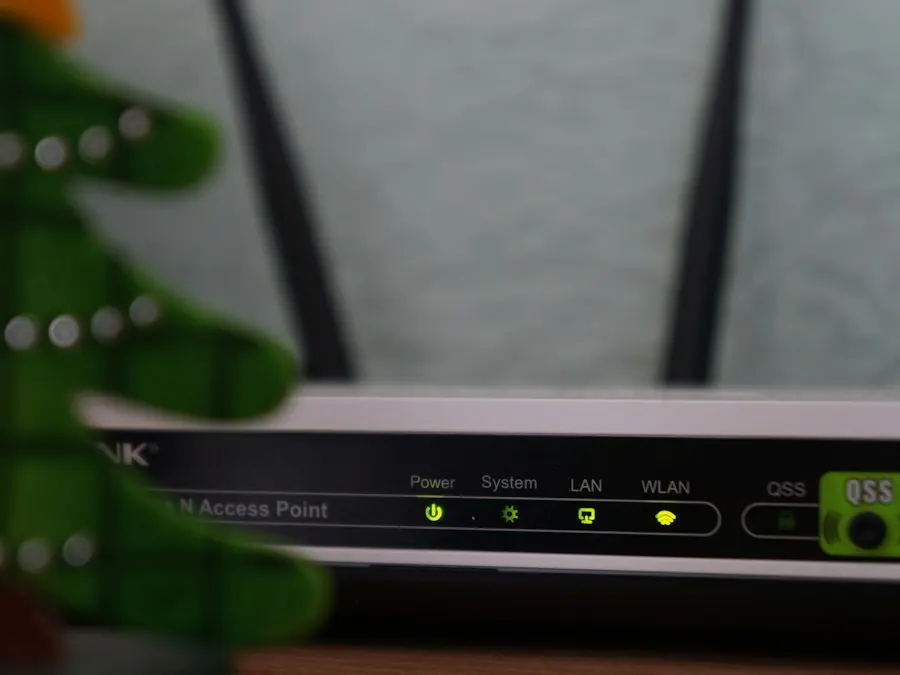

Uy Wi-Fi
Internet butun uyga yetmasa
- MikroTik hAP ax² router (Wi-Fi 6)
- Oʻrnatish va sozlash
- Mehmonlar uchun alohida Wi-Fi
- Parol va xavfsizlik
1 650 000 soʻm
uskunasi bilan, taxminan
Tanlash
Buxoroda MikroTik va internet tarmoq sozlash
Tarmoqlar · Internet · MikroTik
15 yildan beri ofis va uylarda tarmoq quraman: MikroTik sozlash, internetni ulash va tarmoqning uzluksiz ishlashini taʼminlash.
Asosiy xizmatlar. Roʻyxatda yoʻq ish boʻlsa ham yozing — maslahat beraman.
RouterOS: firewall, NAT, VPN, bir nechta provayder va tezlik cheklovlari.
Ofis va uy uchun tarmoqni loyihalash, kabel tortish va rozetka oʻrnatish.
Access point’lar, bino boʻylab uzilmaydigan Wi-Fi va mehmonlar tarmogʻi.
Provayder bilan ulanish, zaxira kanal va tezlikni tekshirish.
Server, printer va umumiy papkalarni sozlash, foydalanuvchi huquqlari.
Nosozliklarni topish, monitoring va doimiy xizmat koʻrsatish.
Haqiqiy loyihalar rasmlari shu yerga qoʻyiladi.

Namuna
Namuna
Namuna
NamunaTayyor paketni tanlang yoki alohida xizmat buyurtma qiling. Aniq narx vazifani koʻrgach aytiladi.
Internet butun uyga yetmasa
10 ish oʻrnigacha ofis uchun
Doimiy texnik yordam kerak boʻlsa
Alohida xizmatlar: MikroTik sozlash — 150 000 soʻm (1 qurilma uchun) · Tarmoq nuqtasi — 50 000 soʻm (1 rozetka uchun)
Koʻp uchraydigan sabablar: router uyning bir chetida turibdi, qalin devorlar, ulangan qurilmalar koʻp yoki router eskirgan. Koʻpincha routerni toʻgʻri joyga qoʻyish va qayta sozlashning oʻzi yordam beradi.
Kuchaytirgich (repiter) oʻrniga mesh tizim yoki kabel bilan ulangan qoʻshimcha nuqta (access point) qoʻyish yaxshiroq — xonadan xonaga oʻtganda internet uzilmaydi.
Bu professional router: ikki provayderni ulash, mehmonlar uchun alohida Wi-Fi, tezlikni cheklash, filiallar orasida VPN. Ofis, doʻkon va mehmonxonaga juda mos, oddiy uyga shart emas.
Vazifani yozing — narx va muddatni aytib beraman.